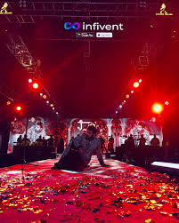
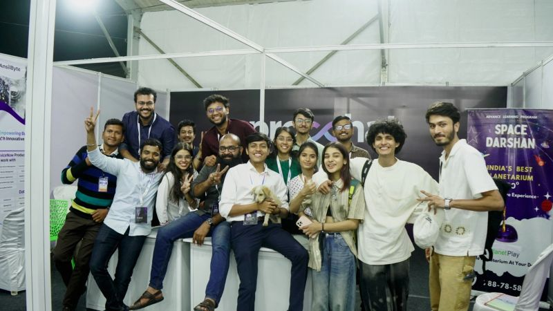
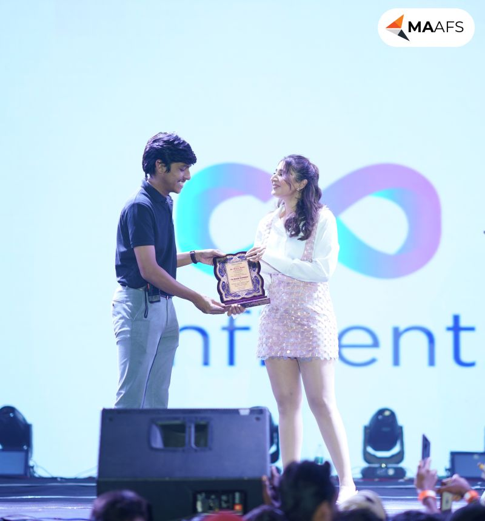

Event Management
SaaS Platform
SaaS concept for managing events, registrations, vendors, attendees, and operational workflows — bringing scattered event operations into one organized dashboard.
Event teams often manage registrations, attendees, vendors, schedules, and operations across multiple disconnected tools. The overhead of switching contexts, exporting data, and tracking status manually creates unnecessary operational drag.
The challenge was to structure a SaaS platform that could bring these workflows into one organized dashboard — giving event teams a single place to set up, manage, and track events without losing the operational detail they need.
I contributed to shaping the product structure, mapping key operational workflows, understanding admin and event-team needs, and creating screen flows and wireframes for the core platform experience.
- Workflow mapping across event operations
- Admin dashboard structure and IA
- Registration flow planning
- Vendor and attendee management flow
- Wireframe support for core screens
- Feature breakdown and prioritization
I started by mapping the operational journey of an event — from initial setup through live event day through post-event follow-up. Each stage surfaced different user types (event admins, vendors, attendees) with different needs and action sets.
From that map I structured the dashboard IA, defined the key workflow modules (registration, vendor management, attendee tracking, scheduling), and then created wireframes that connected those workflows into a coherent admin experience.
- SaaS product structure and dashboard thinking
- Multi-role workflow mapping (admin, vendor, attendee)
- B2B operations product design
- Information architecture for complex platforms
- End-to-end product flow ownership
- Translating operational complexity into clear screens

Platform · View 01
Platform · View 02
Platform · View 03Event Management SaaS Platform · Registrations, vendors, attendees, operations · Product flow · Dashboard